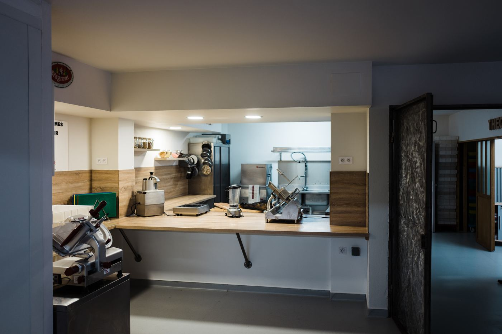

Objectif de la formationTout ce qu'il faut savoir avant d'arriver : où nous trouver, comment se déroule votre formation, ce qui est attendu de vous.
École Pizzaïolo Jean-Jacques Despaux · SIRET 879 955 136 00012 · NAF 8559A
NDA 76 65 00989 65 auprès du préfet de la région Occitanie
101 rue Alsace Lorraine, 65300 Lannemezan · contact@ecole-pizza.com
Version 2.0 Mise à jour le 14/01/2026
Livret d'accueilSommaire
Document d'accueil
Sommaire
1.Notre certification1
2.Mot d'accueil2
3.Votre formateur3
4.Accès au centre de formation4
5.Le centre de formation5
6.Nos formations7
7.Les programmes9
Niveau I — Pizza classique9
Niveau I Pro — Pizza classique10
Niveau II — Empâtements indirects11
Niveau Expert — Spécialités italiennes12
Spécialisation In Teglia & In Pala13
Spécialisation Pizza napolitaine14
Option — Hygiène alimentaire15
8.Tenue, sécurité et hygiène16
9.Règlement intérieur17
10.L'équipe École Pizza18
École Pizzaïolo Jean-Jacques Despaux · Mise à jour le 14/01/2026
Livret d'accueilNotre certification
1
Notre certification
La certification qualité a été délivrée au titre de la catégorie d'action suivante : actions de formation.
Organisme certifié
École Pizzaïolo Jean-Jacques Despaux
Adresse
101 rue Alsace Lorraine, 65300 Lannemezan — France métropolitaine
Numéro de déclaration d'activité
76650098965
Certificateur
ICPF — accréditation Cofrac n° 5-0616, portée disponible sur cofrac.fr
Vérifiable sur
certif-icpf.org
Le certificat reproduit dans le livret précédent était expiré
Le livret de
novembre 2023 reproduisait le certificat B01371, valable
du 17/05/2021 au 16/05/2024. Il ne peut plus être diffusé en l'état :
un stagiaire ou un financeur qui le lit aujourd'hui y voit une certification périmée.
À faire : insérer ici le scan du certificat en cours de validité,
avec ses dates. certificat à jour à fournir — Marie-Christine
Ce que Qualiopi certifie
Qualiopi atteste de la qualité du processus
mis en œuvre par l'organisme — pas de la qualité d'une formation en particulier. C'est ce qui
rend les formations de l'école finançables par les opérateurs de compétences
et les financeurs publics.
Passionné par la cuisine depuis mon enfance, j'ai eu de belles
expériences dans le monde de la restauration.
Quand je me convertis au métier de la pizza, je ne me doute pas de la richesse de ce
savoir-faire. C'est aussi grâce à des formations en Italie et à la participation à de
nombreux championnats nationaux et internationaux que mon métier de pizzaïolo s'est
étoffé. Il suffisait d'une remise en question !
C'est au travers de la formation que je partage avec vous mes techniques, mes astuces,
ma passion.
Jean-Jacques Despaux Président de l'École Pizza

Pourquoi nous ?
L'École Pizza | Jean-Jacques Despaux a été créée en 2007 afin
d'accompagner les demandeurs d'emploi, les restaurateurs, les porteurs de projet, les
particuliers — toute personne désirant apprendre le métier de pizzaïolo ou ajouter des
compétences à son expérience professionnelle.
Dans cet élan, en 2016, des travaux sont effectués au rez-de-chaussée du
bâtiment afin d'assurer aux stagiaires une formation de qualité, avec des
postes de travail individuels équipés du matériel nécessaire.
2013 — 2e mondial, Championnat du Monde à Parme (Italie), Pizza Due
2012 — 3e mondial, Championnat du Monde à Salsomaggiore (Italie), Pizza Due
2012 — 1er prix en créativité, Championnat Mondial de Pizzaïoli à Naples (Italie)
2010 — 1er prix du World Pizza Plate à Paris, toutes catégories
2006 — 3e français, Championnat de France
2005 — 3e français, Championnat de France
2004 — 1er français au Championnat Européen à Marbella (Espagne)
Organisateur du Championnat de France de la pizza
L'École Pizza organise le
Championnat de France de la pizza et les étapes du France Pizza
Tour, en partenariat avec l'Association des pizzerias françaises.
Deux numéros de téléphone dans le livret précédent
La page « Accès » portait
le 05 62 40 25 98 alors que le pied de page et la page « Formateur »
donnaient le 05 62 50 18 64, tous deux présentés comme celui du secrétariat.
C'est le second qui a été retenu ici, parce qu'il apparaît partout ailleurs.
à confirmer — Marie-Christine
Cette page figurait en double
Les pages 6 et 7 du livret de 2023 étaient
rigoureusement identiques. Une seule est conservée. Si un plan d'accès ou
une photo de façade devait occuper la seconde, il reste à le fournir.
visuel d'accès à fournir
Six formations et deux spécialisations. Le Niveau I ou le Niveau I Pro ouvrent tout le reste.
Formation
Durée
Objectif
Prérequis
Niveau I Pizza classique
5 j · 35 h
Réaliser des pizzas classiques, de l'élaboration de l'empâtement direct jusqu'à la sortie du four.
Aucun
Niveau I — option hygiène
5 j · 44 h
Le Niveau I, en appliquant les gestes et la réglementation d'hygiène adaptés à la restauration commerciale.
Aucun
Fabriquer des pizzas artisanales RS 7404
5 j · 35 h
Fabriquer des pizzas artisanales, de l'empâtement direct ou semi-direct jusqu'à la présentation du produit fini.
Professionnels des métiers de bouche
Niveau I Pro Pizza classique
2 j · 15 h
Mettre en pratique le protocole de l'empâtement direct et l'étalage à la main.
Professionnels des métiers de bouche
Niveau II Empâtements indirects
3 j · 21 h
Maîtriser les empâtements indirects Poolish et Biga, et la pizza contemporaine.
Niveau I ou Niveau I Pro
Niveau Expert Spécialités italiennes
4 j · 28 h
Réaliser les empâtements indirects Poolish, Biga, contemporaine, In Teglia et In Pala, et un empâtement direct In Teglia et In Pala.
Niveau I ou Niveau I Pro
Une durée qui a changé
Le livret de 2023 annonçait le Niveau II sur
2 jours. Les documents de formation 2026 le donnent sur
3 jours / 21 heures. C'est cette dernière valeur qui est reprise ici.
à confirmer
Élaborer une pizza sur plaque, spécialité italienne, destinée à être vendue à la part.
Niveau I ou Niveau I Pro
Pizza napolitaine agréée AVPN
5 j · 35 h
Réaliser des pizzas napolitaines, de l'élaboration de l'empâtement jusqu'à la sortie du four.
Niveau I ou Niveau I Pro
L'option hygiène
Le stage spécifique en hygiène alimentaire, adapté à l'activité des établissements de
restauration commerciale, se décompose en un apport théorique, des
études de cas, des observations et du travail pratique, en
utilisant le guide de bonnes pratiques d'hygiène.
Aliments et risques pour le consommateur
Les fondamentaux de la réglementation communautaire et nationale
Le plan de maîtrise sanitaire
À l'issue de la formation
Une attestation de formation est
délivrée, en conformité avec la réglementation en vigueur.
3 jours · 21 heures · Prérequis : Niveau I ou Niveau I Pro
Programme théorique — 4 heures
Identifier les empâtements indirects Poolish et Biga
Connaître les quantités nécessaires et le protocole des empâtements indirects « Poolish & Biga »
Programme pratique — 11 heures
Réaliser la 1re et la 2e phase des empâtements indirects « Poolish & Biga »
Contrôler la pousse
Diviser, peser, bouler et bloquer la pâte
Étaler les pâtons
Réaliser des pizzas classiques et créatives
Évaluer les différences entre les empâtements « Poolish & Biga »
Planning
Jour
Matin
Après-midi
Lundi
08 h 45 – 12 h 00
13 h 00 – 17 h 15
Mardi
08 h 00 – 12 h 00
13 h 00 – 16 h 30
Durée à confirmer
Le livret de 2023 donne ce programme sur 2 jours et 15 heures
(4 h de théorie + 11 h de pratique) alors que les dossiers de formation 2026 annoncent
3 jours et 21 heures. Le planning ci-dessus est celui du livret : il
lui manque une journée. à trancher — Marie-Christine
Identifier les empâtements indirects Poolish, Biga, Contemporaine, In Teglia et In Pala
Nommer les ingrédients et le poids pour chaque empâtement
Décrire le protocole pour chaque empâtement
Programme pratique — 24 heures
Poolish & Biga — réaliser la 1re et la 2e phase des empâtements indirects
Contrôler la pousse · diviser, peser, bouler et bloquer la pâte · étaler les pâtons
Réaliser des pizzas classiques et créatives
Évaluer les différences entre les empâtements « Poolish & Biga »
In Teglia & In Pala — réaliser l'empâtement direct et les empâtements indirects (50 % et 100 % Biga), 1re et 2e phase
Mettre sur plaque ou sur pelle, garnir et cuire les deux empâtements
Découper la teglia et la pala
Évaluer les différences entre les différents empâtements
Contemporaine — démonstration de pizzas contemporaines
Planning
Jour
Matin
Après-midi
Lundi
08 h 45 – 12 h 00
13 h 00 – 17 h 15
Mardi
08 h 00 – 12 h 00
13 h 00 – 17 h 30
Mercredi
08 h 00 – 12 h 00
13 h 00 – 17 h 30
Jeudi
08 h 00 – 12 h 00
13 h 00 – 16 h 30
Durée à confirmer
Le programme totalise 32 heures (8 + 24) et le planning ci-dessus
aussi. Aucun document de l'école ne donne de durée en heures pour l'Expert : seule
« 4 jours » est écrite partout. La couverture du manuel n'annonce donc pas d'heures. à trancher — Marie-Christine
5 jours · 35 heures · Prérequis : Niveau I ou Niveau I Pro
Programme théorique — 7 heures
Décrire l'histoire de la pizza napolitaine et expliquer le dépôt de la marque auprès de la Commission européenne — Spécialité traditionnelle garantie, par l'association Verace Pizza Napoletana
Nommer les ingrédients de la pâte à pizza avec le poids par unité de calcul
Expliquer le protocole de l'empâtement en maîtrisant la température en fin de pétrissage
Énumérer les matières premières utilisées et leurs dosages pour la réalisation des pizzas « Margherita » et « Marinara »
Programme pratique — 28 heures
Peser les matières premières pour la pâte
Réaliser le protocole de l'empâtement en maîtrisant la température en fin de pétrissage, à la main et au pétrin
Diviser, bouler, peser, stocker en bac
Étaler les abaisses à la main
Élaborer une sauce tomate
Garnir de sauce tomate et cuire les fonds de pâte
Réaliser des pizzas napolitaines
Gérer la température des fours
Effectuer le travail de pelles pour enfourner et défourner
Les fondamentaux de la réglementation communautaire et nationale
Le plan de maîtrise sanitaire
Programme pratique — Études de cas et travail pratique
Études de cas et observations
Travail pratique en utilisant le guide de bonnes pratiques d'hygiène
À savoir
Le stage spécifique en hygiène alimentaire est adapté à l'activité des établissements
de restauration commerciale. À l'issue de la formation, une attestation est
délivrée, en conformité avec la réglementation en vigueur.
Pas de bijoux — l'alliance est tolérée.
Interdiction de fumer dans les locaux.
Sécurité
Extincteurs
À côté du bureau · sortie de secours (salle des pétrins) · à l'entrée (salle des cuissons).
Coupure de courant
Contacter immédiatement le formateur et ne pas remettre le courant soi-même.
Pictogrammes à connaître
Inflammable
Corrosif
Nocif, irritant
Dangereux
Polluant pour l'environnement
Hygiène
Les mains sont le premier vecteur de contamination : il faut les
laver le plus régulièrement possible, et obligatoirement lors de la prise de
poste, après une opération contaminante, après avoir fumé, mangé ou s'être mouché, après le
nettoyage et la désinfection, après être allé aux toilettes, et avant de manipuler des
produits sensibles.
Les règles de vie du centre pendant votre séjour en formation.
Ce chapitre est à fournir
Le « Règlement intérieur » figurait au sommaire du
livret de 2023 mais n'existait dans aucune de ses 25 pages. C'est le seul
manque réel du document — et ce n'est pas un détail : le règlement intérieur d'un
organisme de formation est obligatoire, il doit être porté à la connaissance
du stagiaire, et il est demandé en audit.
À faire : insérer ici le règlement intérieur en vigueur, ou le
rédiger s'il n'existe pas. document à fournir — Marie-Christine
Ce qu'il doit couvrir
À titre indicatif, les rubriques attendues : les
règles de discipline et les sanctions applicables ; les mesures
d'hygiène et de sécurité ; la représentation des
stagiaires pour les formations longues ; les horaires et les
conditions d'absence ; l'usage du matériel ; la procédure de
réclamation et le référent handicap.


 Version 2.0
Version 2.0